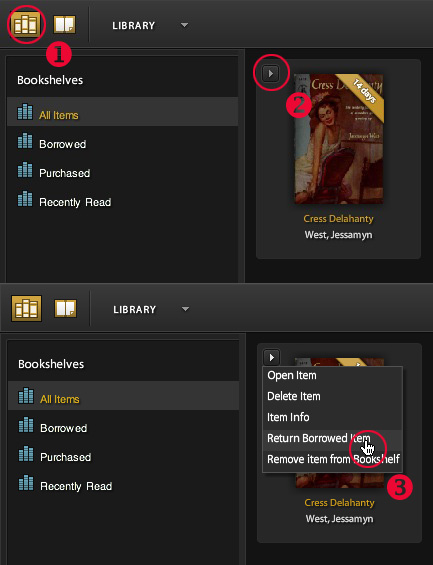
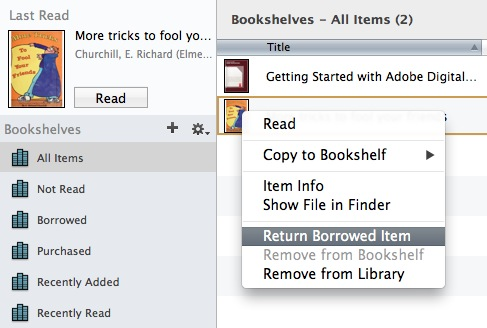
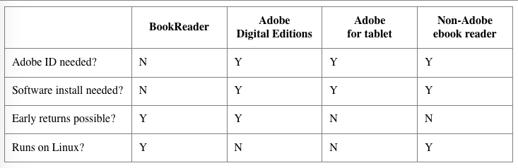

Back to main FAQ page or Troubleshooting
- What books can I borrow? How can I find them?
- How do I get set up to borrow books through Open Library?
- How does borrowing a book work through Open Library?
- Which reading devices can be used to read the ebooks borrowed through Open Library?
- How many books can I check out at once?
- Can I returned a library book early?
- How can I see which books I've checked out?
- Can I put a library book on hold?
- Questions about hardware and software
What books can I borrow? How can I find them?
The easiest way to find books to borrow is with the eBook Lending Library which shows books that have editions available through the Internet Archive.
You can also use the search page and check the box "Show only eBooks" though this will also return results in DAISY format. You may also want to browse books in the Accessible Book subject facet.
How do I get set up to borrow books through Open Library?
- Sign up for an Open Library account
- Find a book to borrow
- If a BookReader adition is available, you can read it instantly online by clicking the "Read in Browser" link. You're done!
- Borrowing books in other formats will require
- Adobe Digital Editions or ebook software that works with Adobe authentication. You can read this FAQ entry for information on other ebook software.
- An Adobe.com account which you can get here
- Once Adobe Digital Editions or other ebook reader is downloaded, installed and registered, click the download link for the title on Open Library to download an EPUB or PDF.
How does borrowing a book work through Open Library?
The Internet Archive and participating libraries have selected digitized books from their collections that are available to be borrowed by one patron at a time from anywhere in the world for free. These books are available in BookReader format and usually in PDF and ePub formats. You can choose which format you prefer.
BookReader editions may be read online immediately in your web browser. No special software is required. Other Internet Archive loans are managed through Adobe Digital Editions and will require software installation on your device.
Can I listen a books?
Any book that you can borrow from Open Library is also available in audio form. Click the "listen" button next to the "borrow" button.
LibriVox has books narrated by volunteers. If a book is available on LibriVox you'll see the link listed under ID Numbers.
Which reading devices can be used to read the eBooks borrowed through Open Library?
Internet Archive offers borrowable books in BookReader, PDF and ePub formats. BookReader editions may be read online immediately in any web browser on any device. Downloadable eBooks are readable in Adobe Digital Editions and some other software applications.
How many books can I check out at once?
You can borrow ten books at a time from Open Library. Loans are for one hour for browsing and/or 14 days if the book is fully borrowable. When loans expire the books will be disabled on your device.
Can I return a library book early?
Sometimes. If you borrowed a BookReader edition, simply return it from your Loans page.
If you downloaded another type of ebook, you can return it if you borrowed it through Adobe Digital Editions for all versions except the iPad version. If you checked out your book with other software like Bluefire Reader, you will not be able to return your book early.
In Adobe Digital Editions, look for your "library". That's the book spines icon in the top left corner of the application (1). Once you're in your library, click on the menu for the book you'd like to return which is behind the tiny triangle that appears by the book cover (2) and select "Return Borrowed Item" from the menu (3). This image will show you where to look.
You may also be able to right-click on your item and select "Return Borrowed Item" from the contextual menu. Here is a screenshot of this option.
If you used other software to access your book, you can't return it early but the item will be automatically returned at the end of the loan period.
How can I see which books I've checked out?
There's a page under your Open Library Account which displays all the books you've checked out at any one time - https://openlibrary.org/account/loans
Can I put a library book on hold?
Yes! There is a waiting list feature. If you see a book that is checked out, you have an option to add yourself to a waiting list for that book. When the book is returned and available, you will get an email. You then have 24 hours to check the book out. If you do not check out the book before the 24 hours is up, it will be made available to the next person on the list.
Hardware and Software
- What is the difference between the BookReader, Adobe and other ebook reader options?
- Where do I get Adobe Digital Editions?
- How do I authorize Adobe Digital Editions? Who is my ebook vendor?
- Can I borrow books on my Nook?
- Can I borrow books on my Kindle?
- Can I borrow books on my iPad, Android tablet or Linux box?
What is the difference between the BookReader, Adobe and other ebook reader options?
This chart outlines some of the basic differences between the different options.
Where do I get Adobe Digital Editions?
You can download Adobe Digital Editions from adobe.com. It's free. If you use other ebook reader software it must be Adobe compliant and you will still need an Adobe ID. You can get one online here. An older version of Adobe Digital Editions can be found at this link.
Can I read or borrow books on my Kindle?
The procedure varies depending what model Kindle you have.
If you have a Kindle Fire, you will need to "sideload" an Adobe Digital Editions compatible application. Here is a handout from one of our partner libraries explaining the process.
For older non-Fire Kindles, you can only read Classic Ebooks not borrow Lending Library books.
Can I borrow books on my Ipad or Android tablet?
Yes!
New: Adobe Digital Editions is now available for Ipad.
You can read our books using our BookReader via your browser or by using an ebook app like Bluefire Readervor Aldiko Book Reader. Before you start, register an Adobe ID. You'll need to do this once. If you don't have one, create one at this page.
Here are step-by-step instructions for Aldiko Reader
- Download and install Aldiko Book Reader from Google Play Store.
- Open Aldiko, Select Other Catalogs under the Get Books section of the menu.
- Select My Catalogs at the top and tap New Catalog on the green bar at the top.
- Create an entry for the Open Library using openlibrary.org for the URL. Tap on the library and sign in.
- When you have found a book you like, check it out. When the next screen comes up, select the pdf or epub version. You will then be prompted to enter your Adobe id and password. Your book will then download into Aldiko and you can open it and read it at your leisure.
The only downside to this process is that books can not be returned early via non-Adobe applications, so you'll just have to let them expire or we can return them early if you need to free up space on your loans list.
How do I borrow books to read on my Nook or my Kobo?
Here are instructions on how to do this from Barnes and Noble. See this blog post for instructions that are specific to Open Library. This post on the Kobo website gives information on how to borrow books on a Kobo.